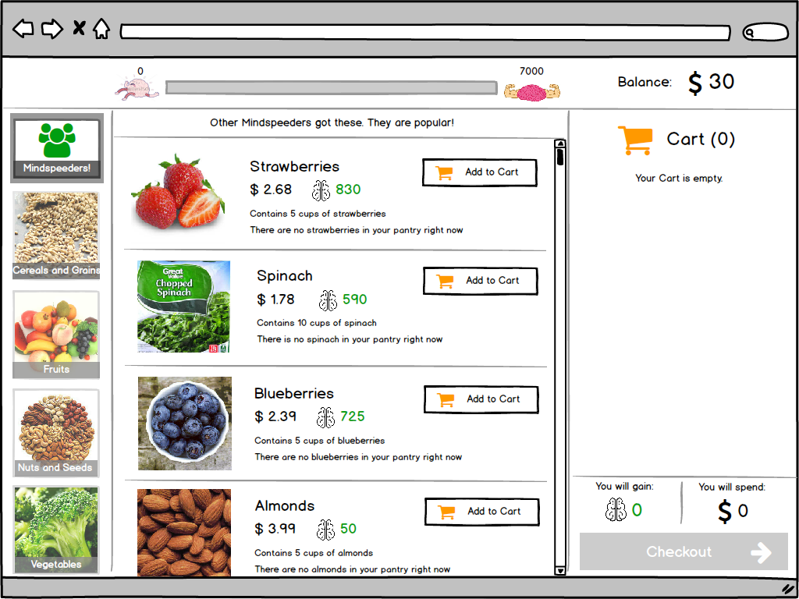

MINDSpeed

Summary
MINDSpeed is a research project that aims to promote graceful and dignified aging by facilitating the consumption of brain-healthy foods and the playing of mentally-stimulating games. On this project, I joined a UX team that had already done preliminary research to dicover the users (adults 65 and older) as well as their eating and device usage habits. Each member of the team contributed design ideas and interactive prototypes which we critiqued and tested with users to discover the right blend. Following this, I built a web application to implement the ideas that worked best for our users.
Design Process
- Review User Research
- Sketching
- Low Fidelity Prototype
- High Fidelity Prototype
- User Testing
- Software Development
Review User Research
Reviewing the research conducted by the team revealed two major goals: enable users to order brain-healthy meals and incentivize meal reporting.
The research also revealed that MINDSpeed had to be super simple to use because older adults have no patience for complicated workflows, use familiar metaphors, appear friendly, and be approachable.
Sketching
First Round
I started off with some quick sketching to get ideas out of my head. In doing so, I played around with creating a schedule of meals for each week that the users would build. Also, they would be challenged with balancing a weekly budget against getting a certain number of "brain points."
Second Round after Design Critique
Sketched out a flow based on the metaphor of going to the store to buy ingredients, stocking one's pantry with those ingredients, and getting suggestions on what meals could be created from them.
Low Fidelity Prototype
Low fidelity prototyping with Balsamiq to capture the interactions, get a concrete sense of the flows, and get more critique.
High Fidelity Prototype
Created an interactive high fidelity prototype with Sketch and Marvel for user testing.

User Testing
The prototype was tested with eight participants who were able to complete the tasks we assigned, but we found several aspects of the design that needed rethinking due to the facts that:
- Participants routinely assumed that the brain points were calorie counts, which misled them towards minimizing what we hoped they would maximize
- Staying within the budget while trying to reach the brain points goal was more difficult than we anticipated
- The cognitive burden from having to make so many decisions was unsustainable
MINDSpeed Web App
Based on what we learned from the testing sessions, the team came up with an improved design that removed the complexity of previous designs, preserved the user's ability to make informed choices, and incentivized healthy eating.
Meal Ordering
Users can build a seven-meal order by adding choices to their cart.
Incentives
Each day users report what they ate, they get a small incentive.
Next Steps
To further refine the application, the team intends to conduct some think-alouds with potential users. We are also planning to conduct taste tests to find out which of our meals people find palatable. Beyond these will come the real test when participants start using MINDSpeed to order the meals that they will eat everyday while part of their three month stint in the four year MINDSpeed research study.
Check out some of my other projects

Sharendipity
Enabling serendipitous connections between people in close proximity who share interests

Open Journals
Discovering what's important and reimagining a better experience for academic journal editors

The Car Wizard
Making the online car shopping process a breeze, one answered question at a time
Back to Projects To Top